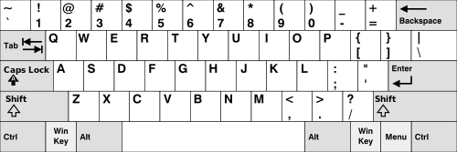
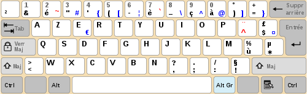
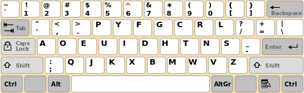
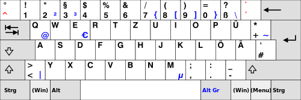
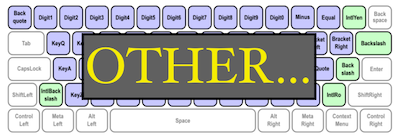

<!DOCTYPE html>
<html>
    <head>
    <meta charset="UTF-8">
    
    <title>Primed Lexical Decision Experiment</title>

    <script src="https://web-experiments.lab.hum.uu.nl/jspsych/6.1.0/jspsych.js"></script>
    <script src="https://web-experiments.lab.hum.uu.nl/jspsych/6.1.0/plugins/jspsych-html-keyboard-response.js"></script>
    <script src="https://web-experiments.lab.hum.uu.nl/jspsych/6.1.0/plugins/jspsych-html-button-response.js"></script>

    <!-- Generic check/ask libraries -->
    <script src="https://web-experiments.lab.hum.uu.nl/jspsych/6.1.0/plugins/jspsych-audio-button-response.js"></script>
    <script src="https://web-experiments.lab.hum.uu.nl/jspsych/6.1.0/plugins/jspsych-instructions.js"></script>
    <script src="https://web-experiments.lab.hum.uu.nl/jspsych/6.1.0/plugins/jspsych-survey-html-form.js"></script>
    <script src="https://web-experiments.lab.hum.uu.nl/jspsych/6.1.0/plugins/jspsych-survey-multi-choice.js"></script>
    <!-- Generic jspsych style sheets -->
    <link href="https://web-experiments.lab.hum.uu.nl/jspsych/6.1.0/css/jspsych.css" rel="stylesheet" type="text/css"/>

    <!-- Uil OTS libraries -->
    <script src="https://web-experiments.lab.hum.uu.nl/jspsych/uil-utils/dev/jspsych-uil-utils.js"></script>

    <!-- Uil OTS scripts -->
    <script src="stimuli.js"></script>
    <script src="globals.js"></script>
    <script src="instructions.js"></script>
    <style>

    .stimulus { 
        font-size: 30px; 
        font-family: monospace;
        font-weight: normal;
    }

    .instruction {
        text-align: left;
        margin: 5% 10% 5% 10%;
    }

    kbd {
        border-radius: 2px;
        padding: 2px;
        border: 1px solid black;
    }
    
    input,
    label {
        margin: .4rem 0;
    }

    span::after {
        padding-left: 5px;
    }

    input:invalid + span::after {
        content: '✖';
    }

    input:valid+span::after {
          content: '✓';
    }

    </style>
    </head>
    <body></body>
    <script>
    
    var stimuli = pickRandomGroup();

    // data one would like to add to __all__ trials, according to:
    // https://www.jspsych.org/overview/data/
    var subject_id = jsPsych.randomization.randomID(8);
    var group_name = stimuli.group_name;

    jsPsych.data.addProperties(
    {
        subject: subject_id,
        group: group_name,
    });

    //////////////// test page flows ///////////////////////////////
    
    var start_screen = {
        type: 'html-button-response',
        stimulus: function(){ 
            return "<div class='instruction' >" + 
            '<p>' + GENERIC_CHECK + '</p></div>';
        }, 
        choices: [OK_BUTTON_TEXT],
        response_ends_trial: true,
        on_load: function(){
            var iamamobile = uil.isMobileOrTablet();
            if (iamamobile == true){
                console.log('tablet/mobile');
                jsPsych.endExperiment("The experiment was ended because we fear you are not on the right type of device to proceed. You're on a laptop or PC with audio and keyboard and mouse or trackpad available, right? If not, please come back here on a device that qualifies!")
            } else {
                console.log("This device might be alright to proceed!");
            }
        },
        data: { useful_data_flag: false }
    };

    ////////////// survey-related 

    var survey_valid_year_html_number = {
        type: 'survey-html-form',
        preamble: '<p>' + YEAR_BORN_QUESTION + '</p>',
        html: '<input type="number" id="birth_year" name="birth_year" placeholder=1999 min=1919 max=2019 required>' + 
              '<span class="validity"></span><BR>'
    };
    
    var survey_valid_month_html_number = {
        type: 'survey-html-form',
        preamble: '<p>' + MONTH_BORN_QUESTION + '</p>',
        html: '<input type="number" id="birth_month" name="birth_year" placeholder=7 min=1 max=12 required>' + 
              '<span class="validity"></span><BR>'
    };

    var survey_valid_language_html_text = {
        type: 'survey-html-form',
        preamble: '<p>' + NATIVE_LANGUAGE_QUESTION + '</p>',
        html: '<input type="text" id="language" name="native_language" pattern="[a-zA-Z]+" placeholder="Dutch" required>' +
              '<span class="validity"></span><BR>'
    };

    // // default options for the multi=block
    // var bilingual_options = ["No","Yes"];
    // var dyslex_options = ["No", "Yes", "Unsure (not diagnosed)"];
    // var gender_options = ["Female", "Male"];
    // var hand_options = ["Left handed", "Right handed"];

    // this multi-choice is a usable plugin, since it has built-in 
    // validation
    var survey_multi_choice_block = {
        type: 'survey-multi-choice',
        questions: [
            {
                prompt: BILINGUAL_QUESTION,
                name: 'Multilingual', 
                options: BILINGUAL_OPTIONS, 
                required:true, 
                horizontal: true
            }, 
            {
                prompt: DYSLEXIC_QUESTION, 
                name: 'Dyslexic',
                options: DYSLEXIC_OPTIONS,
                required: true,
                horizontal: true
            },
            {
                prompt: GENDER_QUESTION,
                name:'Gender',
                options: GENDER_OPTIONS,
                required: true,
                horizontal: true
            },
            {
                prompt: HAND_QUESTION, 
                name:'HandPreference', 
                options: HAND_OPTIONS, 
                required: true, 
                horizontal: true
            }
        ],
    };


    var test_audio_start = {
        type: 'html-button-response',
        stimulus: function(){ 
            return "<div class='instruction' >" + 
            '<p>' + AUDIO_CHECK_ONE + '</p></div>';
        }, 
        choices: ["OK"],
        response_ends_trial: true,
        data: { useful_data_flag: false }
    };

    // unused now
    var test_audio_single = {
        type: 'audio-button-response',
        stimulus: './sounds/boat.mp3',//timelinevar for audio checks?
        choices: ['I hear a sound','I hear no sound'],
        prompt: function(){ 
            return "<div class='instruction' >" + 
            '<p>' + AUDIO_CHECK_PROMPT_TEXT + '</p></div>';
        },
        data: {
            trial_phase: 'test_audio_single',
            useful_data_flag: false,
        },
        on_finish: function(data){
            if (data.button_pressed == 0){
                var audio_correct = true; 
            } else {
                var audio_correct = false;
            }
            data.audio_tested = audio_correct;
        }
    };

    var test_audio_looped = {
        timeline: 
        [
            {
                type: 'audio-button-response',
                stimulus: './sounds/boat.mp3',
                choices: ['Play Again', 'Continue'],
                prompt: function(){ 
                    return "<div class='instruction' >" + 
                    '<p>' + AUDIO_CHECK_PROMPT_TEXT_LOOP + '</p></div>'
                }
            }
        ],
        loop_function: function(data){
            if (data.values()[0].button_pressed == 0){
                return true; // loop again!
            } else {
                return false; // continue
            }
        },
        on_finish: function(data) {
            data.audio_checked = true;
            //console.log(data.audio_checked);
        }
    };

    var select_keyboard_one = {
        type: 'instructions',
        pages: [
            "<h1>Keyboard layout</h1><BR>" +
            "<p>Let's figure out what keyboard you use. A couple of well known layouts will be shown with a caption</p>" +
            "<p>Please have a look at the following layouts and remember the one that look most like the keyboard you're using.</p>" + "Click 'next' to proceed and 'back' to review layouts. You don't have to select them here, just look at them...",
            '1/5 <b>QWERTY</b>:<BR><BR></img>',
            '2/5 <b>AZERTY</b>:<BR><BR></img>',
            '3/5 <b>DVORAK</b>:<BR><BR></img>',
            '3/5 <b>QWERTZ</b>:<BR><BR></img>',
            '5/5 <b>OTHER</b>:<BR><BR></img>',
            ],
        show_clickable_nav: true
    };

    var select_keyboard_two = {
        type: 'html-button-response',
        stimulus: '<h2>Choose your keyboard layout</h2>',
        choices: KEYBOARD_CHOICES,
        prompt: "Depending on your screen resolution, you may need to scroll a bit...",
        button_html: '<button class="img-btn"></button>',
        on_finish: function(data) {
            var button_id = data.button_pressed;
            var button_number = parseInt(button_id, 10);
            var keyboard_chosen = KEYBOARD_CHOICES[button_number]; 
            data.keyboard = keyboard_chosen;
        }
    };

    var test_keyboard_left_default = {
        type: 'html-keyboard-response',
        stimulus: function(){ 
            return "<class='stimulus' >" + 
            '<p>Press the <kbd>' + KEYBOARD_LEFT_KEY + '</kbd> on your keyboard.</p>'
        },
        choices: jsPsych.ALL_KEYS,
        response_ends_trial: true,
        stimulus_duration: 10000,
        trial_duration: 10000,
        prompt: "left dominance",
        data: {
            useful_data_flag: true
        },
        on_finish: function(data) {
            var check_key = data.key_press == jsPsych.pluginAPI.convertKeyCharacterToKeyCode(KEYBOARD_LEFT_KEY);
            //
            console.log(check_key);   
        }
    };

    var test_keyboard_right_default = {
        type: 'html-keyboard-response',
        stimulus: function(){ 
            return "<class='stimulus' >" + 
            '<p>Press the <kbd>' + KEYBOARD_RIGHT_KEY + '</kbd> on your keyboard.</p>'
        },
        choices: jsPsych.ALL_KEYS,
        response_ends_trial: true,
        stimulus_duration: 10000,
        trial_duration: 10000,
        prompt: "right dominance!",
        data: {
            useful_data_flag: true
        },
        on_finish: function(data) {
            var check_key = data.key_press == jsPsych.pluginAPI.convertKeyCharacterToKeyCode(KEYBOARD_RIGHT_KEY);
            //
            console.log(check_key);   
        }
    };    

    // var ask_hand_simple = {
    //     type: 'html-button-response',
    //     stimulus: function(){ 
    //         return "<div class='instruction' >" + 
    //         '<p>' + HAND_QUESTION + '</p></div>'
    //     },
    //     choices: HAND_CHOICES,
    //     prompt: "Just trust your impulses...",
    //     on_finish: function(data) {
    //         var button_id = data.button_pressed;
    //         var button_number = parseInt(button_id, 10);
    //         var hand_chosen = HAND_CHOICES[button_number]; 
    //         data.handedness = hand_chosen;
    //         //db
    //         console.log(data.handedness);
    //     }
    // };

    var instruction_screen_practice = {
        type: 'html-button-response',
        stimulus: function(){ 
            return "<div class='instruction' >" + 
            '<p>' + PRE_PRACTICE_INSTRUCTION + '</p></div>';
        }, 
        choices: [OK_BUTTON_TEXT],
        response_ends_trial: true,
        data: { useful_data_flag: false }
    };    
    
    var well_done_screen = {
        type: 'html-button-response',
        stimulus: function(){ 
            return "<div class='instruction' >" + 
            '<p>' + PRE_TEST_INSTRUCTION + '</p></div>';
        }, 
        choices: [OK_BUTTON_TEXT],
        response_ends_trial: true,
        data: { useful_data_flag: false }
    };

    var end_screen_local = {
        type: 'html-keyboard-response',
        stimulus: "Thanks, you're done. Press spacebar to see data", 
        choices: ['space'],
        data: { useful_data_flag: false }
    };

    var end_screen_server = {
        type: 'html-button-response',
        stimulus: "Thanks, you're done. Would you like to click OK?", 
        choices: [OK_BUTTON_TEXT, 'NO'],
        data: { useful_data_flag: false }
    };

    var present_fixation = {
        type: 'html-keyboard-response',
        stimulus: '<span style="font-size:40px;">+</span>',
        choices: jsPsych.NO_KEYS,
        trial_duration: FIXCROSS_DURATION,
        data: { useful_data_flag: false }
    };

    var present_prime = {
        type: 'html-keyboard-response',
        stimulus: function(){ 
            return "<p class='stimulus'>" + jsPsych.timelineVariable('prime', true) + "</p>";
        },
        choices: jsPsych.NO_KEYS,
        trial_duration: PRIME_DURATION,
        post_trial_gap: PRIME_GAP_DURATION,
        prompt: "",
        data: { useful_data_flag: false }
    };

    var present_word = {
        type: 'html-keyboard-response',
        stimulus: function(){ 
            return "<p class='stimulus'>" + jsPsych.timelineVariable('word', true)+"</p>";
        },
        choices: ['z','m'],
        response_ends_trial: true,
        stimulus_duration: WORD_DURATION,
        trial_duration: RESPONSE_TIMEOUT_DURATION,
        prompt: "",
        data: {
            condition: jsPsych.timelineVariable('item_type'),
            word: jsPsych.timelineVariable('word'),
            prime: jsPsych.timelineVariable('prime'),
            id:jsPsych.timelineVariable('id'),
            trial_phase: 'present_word',
            useful_data_flag: true
        },
        on_finish: function(data){
            if(data.condition == 'RELATED'){
                var correct = data.key_press == jsPsych.pluginAPI.convertKeyCharacterToKeyCode('z');
            } else if (data.condition == 'UNRELATED'){
                var correct = data.key_press == jsPsych.pluginAPI.convertKeyCharacterToKeyCode('z');
            } else {
                var correct = data.key_press == jsPsych.pluginAPI.convertKeyCharacterToKeyCode('m');
            }
            data.correct = correct;
        }
    };
        
    var present_feedback = {
        type: 'html-keyboard-response',
        stimulus: function() {
            var feedback_text ='<span style="color:red;font-size:30px;">Incorrect</span>';
            var last_resp_acc = jsPsych.data.getLastTrialData().values()[0].correct;
            if (last_resp_acc == true) {
                feedback_text = '<span style="color:green;font-size:30px;">Correct!</span>'
            }
            return feedback_text;
        },
        choices: jsPsych.NO_KEYS,
        trial_duration: FEEDBACK_DURATION,
        data: { useful_data_flag: false }
    };
    
    // procedures 
    var practice_procedure = {
        timeline:[
            present_fixation,
            present_prime,
            present_word,
            present_feedback
            ],
        timeline_variables: getPracticeItems().table,
        randomize_order: false 
    };

    var trial_procedure = {
        timeline:[
            present_fixation,
            present_prime,
            present_word,
            ],
        timeline_variables: stimuli.table,
        randomize_order:true 
    };

    ///////////////////////////////////////////////////////////

    //////////////// timeline /////////////////////////////////
    var timeline = []
    
    // best practice to have user I/O first
    timeline.push(start_screen);
    
    // survey
    timeline.push(survey_valid_year_html_number);
    timeline.push(survey_valid_month_html_number);
    timeline.push(survey_valid_language_html_text);
    timeline.push(survey_multi_choice_block);


    timeline.push(test_audio_start);
    
    //timeline.push(test_audio_single);
    timeline.push(test_audio_looped);
    // todo: keyboard checks:

            
    // first a non-survey item tot test
    //timeline.push(ask_hand_simple);

    // some reading up: https://hacks.mozilla.org/2017/03/internationalize-your-keyboard-controls/
    
    timeline.push(select_keyboard_one);
    timeline.push(select_keyboard_two);
    timeline.push(test_keyboard_left_default);
    timeline.push(test_keyboard_right_default);


    //now for finding out the real bits..
    // simple sheme
    // Type     |   Left  |   Right
    // ---------|---------|---------- 
    // QWERTY   |   A     |  L
    // AZERTY   |   Q     |  M
    // DVORAK   |   A     |  S (or N?)
    // QWERTZ   |   A     |  L
    // OTHER    |   A     |  L (wild guess)

    timeline.push(instruction_screen_practice);

    // then push the rest
    timeline.push(practice_procedure);
    timeline.push(well_done_screen);
    timeline.push(trial_procedure);
    timeline.push(end_screen_server);

    // localinit 

    // jsPsych.init({
    //     timeline: timeline,
    //     show_preload_progress_bar: false,
    //     use_webaudio: false,
    //     on_finish: function() {
    //         jsPsych.data.displayData();
    //     }
    // })

    // serverinit, with --apparently -- fallback to
    //```jsPsych.data.displayData();``` if ran locally ```

    jsPsych.init({
        timeline: timeline,
        show_preload_progress_bar: false,
        use_webaudio: false,
        exclusions: {
            min_width: 800,
            min_height: 600
        },
        on_finish: function() {
            uil.saveData(ACCESS_KEY, true);
        }
    })

    </script>
</html>

